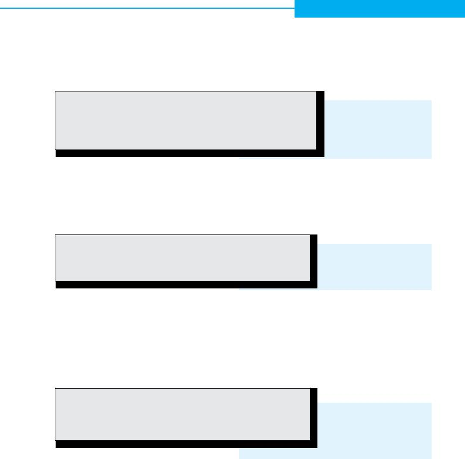
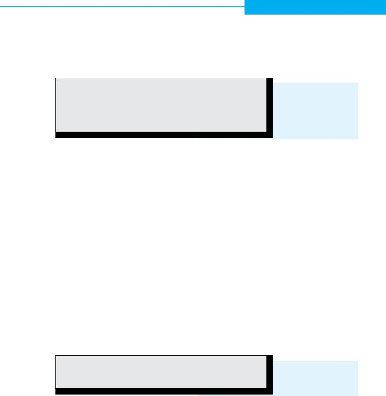
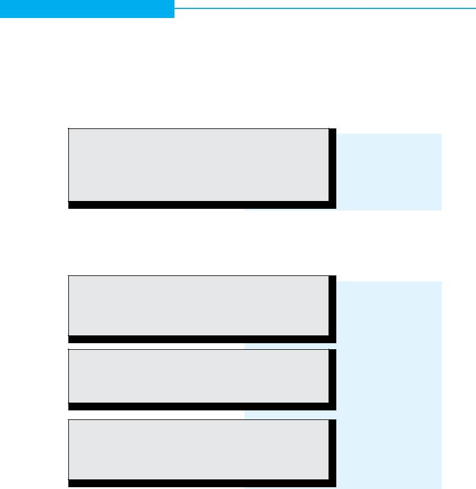
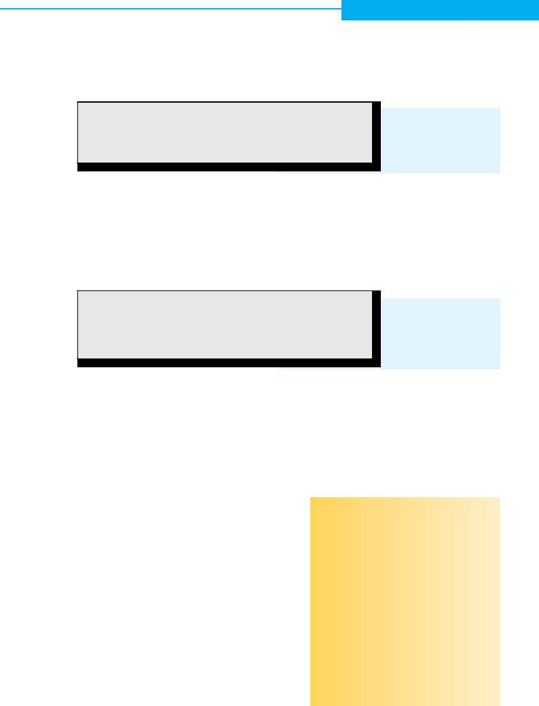
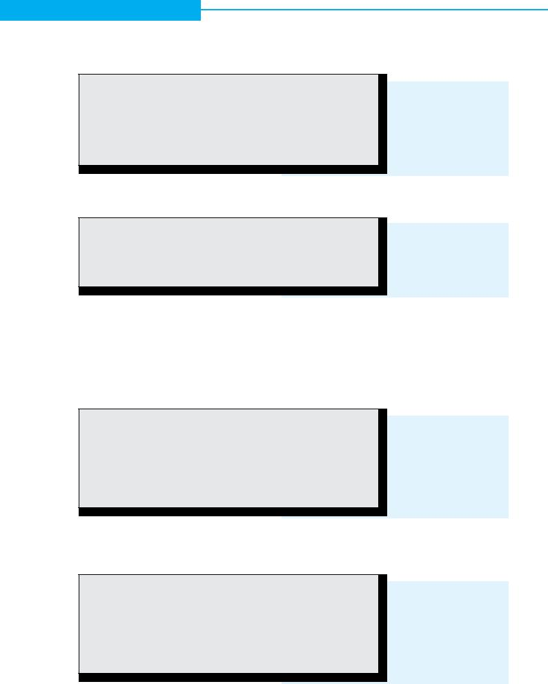
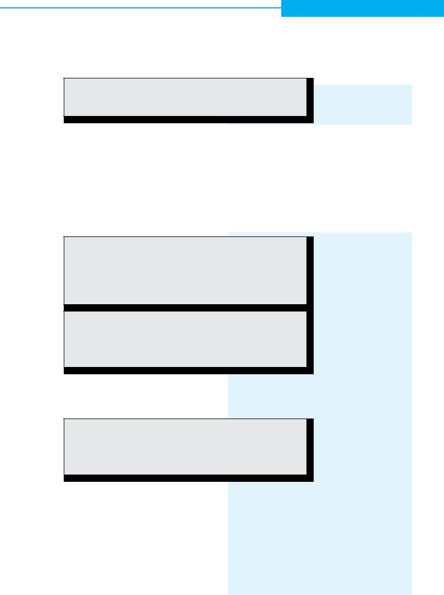

18 Tips&techniques
Franck Pachot, Senior Consultant, Trivadis S.A
Can we actually achieve
NOLOGGING?
Do you know much redo is generated by your DML?
Why do we still have lot of redo logging even when tables are NOLOGGING? Why do Global Temporary Tables still generate redo although no recovery
is needed?
I remember a long time ago, at the beginning of datawarehousing, when a customer asked me how to disable redo logging. I started to explain why it is mandatory: instance recovery, media recovery, etc. But they were reloading the whole datawarehouse each night from flat files. They didn't care about instance or media recovery as long as they still have those files.
Redo logging is essential, providing ACID database pro- perties across failure, but you can't disable it (in any suppor- ted way) when you don't need it.
But hopefully at that time Oracle 8 was coming with /*+ APPEND */ inserts,
I will show here which amount of redo we can expect in several cases, and how we will have to wait for 12c in order to find a way to generate no redo at all for DML.
First, I create a simple table that will store 100 bytes rows.
I’ll measure the following statistics (from v$mystat) across several data modification:
■redo entries aka redo records are the atomic unit of redo, including redo change vectors and undo change vectors
■redo size: the total amount of redo generated in bytes, including both redo and undo vectors
■undo vector size will help to estimate the undo part of the redo size
■db block changes because redo generation is usually involved in block changes
The script used for that is available at:
http://download.pachot.net/redosize.sql
create table TEST_TABLE (a varchar2(24), b varchar2(24), c varchar2(24), d varchar2(24));
SMS
Alternative Quellen
Nebst den klassischen Portalen Google, Vimeo und YouTube gibt es eine Menge an Alternativen mit durchaus hochwertigem Material. Interessant, um sich über ein Thema ein diversifiziertes Bild machen zu können oder schlicht, um mal etwas anderes zu sehen/hören.
Wie wäre es mit www.brighttalk.com, www.slideshare.net oder www.ted.org? Gerade Letzteres hilft beim Entwinden des Hirns mit anregenden Vorträgen, je nach Tagesform unterhaltend, zum Nachdenken oder Bedenken. Hinter dem hier gezeigten QR Code ist ein Video über einen Künstler aus der Kategorie «expert level: asian». Gute Unterhaltung!
SOUG Newsletter 3/2013

Tips&techniques 19
Insert
So let's start to do a simple insert of 10000 rows that have an average size of 100 bytes (4 columns taking 25 bytes each):
SQL> insert into TEST_TABLE select x,x,x,x from (select rpad(rownum,24,'x') x from dual connect by level <= 10000);
10000 rows created. SQL> commit; Commit complete;
db block changes |
redo size |
undo change vector size |
redo entries |
1,577 |
1,248,732 |
45,412 |
1,137 |
I have inserted about 1MB of rows into empty blocks. So the undo vector size (that is used to get the previous image of the block) is minimal and the redo vector size (used to redo that insert) is roughly the size of our inserted rows: 1MB.
I gather the statistics in order to check the size of the table.
SQL> exec dbms_stats.gather_table_stats(user,'TEST_TABLE',estimate_percent=>100);
PL/SQL procedure successfully completed.
SQL> select table_name,blocks,num_rows,avg_row_len from user_tables where table_
name='TEST_TABLE'; |
|
|
|
TABLE_NAME |
BLOCKS |
NUM_ROWS |
AVG_ROW_LEN |
|
|||
TEST_TABLE |
244 |
10000 |
100 |
That confirms that we have 10000 rows having 100 bytes each – total size of rows is 1MB.
Delete
Note that I've no index on my table yet. We will create them later, but for the moment I'm checking the redo related with the table block change only. I'll now delete all those rows.
SQL> delete from TEST_TABLE; 10000 rows deleted.
SQL> commit; Commit complete;
db block changes |
redo size |
undo change vector size |
redo entries |
20,726 |
3,658,740 |
2,039,300 |
10,442 |
This is a lot more expensive than the insert because here we need to be able to rollback all those deleted rows.
The delete is done row by row: For each of the 10000 rows we have a data block change and an undo block change, and both of those changes are logged in the redo. That includes not only the rows, but also the rowid and all block overhead (Interested Transaction List for example).
Remember: the ‘redo size’ includes the ‘undo change vector size’. Both redo and undo information must be logged.
The reason is that during instance recovery (when changes done in memory have been lost before being written to disk), the redo logs will be used to rollforward (redo) the committed transactions, and to rollback (undo) the uncom- mitted transactions.
This (the
SOUG Newsletter 3/2013
20 Tips&techniques
This is why a redo record has actually two change vectors: one to redo and one to undo.
In Oracle, because the undo information is also stored in undo segments (in order to achieve consistent reads without locking), then that undo change vector in the redo stream is actually a redo change vector for the undo block writes. But even if the format is a bit different, the size is roughly the same. This is why I show the 'undo change vector' statistic in order to get the undo part of the redo size.
So, deleting a large amount of rows is a very expensive operation. Lot of data block changes, lot of undo, and then lot of redo.
Now I'll insert my rows again, but with a
SQL> insert /*+ append */ into TEST_TABLE select x,x,x,x from (select rpad(rownum,24,'x') x from dual connect by level <= 10000);
10000 rows created.
db block changes |
redo size |
undo change vector size |
redo entries |
120 |
1,231,288 |
1,528 |
245 |
I have a lot less block changes than with the conventional insert, and I have less redo records. But still the same redo size. The undo is still very low for inserts but we have again our 1MB rows in the redo logs.
The
But at that point you probably wonder why we see the same redo size as with conventional inserts.
We don't need it for instance recovery, and if I were in NOARCHIVELOG mode, the redo size would have been mini- mal.
But here, as in most of the databases, I'm in ARCHIVE- LOG mode, and I want to be able to do media recovery as well (in case I loose datafiles) – this is the ARCHIVELOG mode reason, and for that reason I need that redo informa- tion.
SOUG Newsletter 3/2013

Tips&techniques 21
NOLOGGING
SQL> alter table TEST_TABLE nologging;
Table altered.
SQL> insert /*+ append */ into TEST_TABLE select x,x,x,x from (select rpad(rownum,24,'x') x from dual connect by level <= 10000);
10000 rows created.
db block changes |
redo size |
undo change vector size |
redo entries |
47 |
4,888 |
972 |
33 |
The redo size is now minimal. But remember I have no indexes yet.
In order to cover all cases, we must know that redo may be needed for another reason than media recovery. When we have a standby database, we need to propagate all changes and we often set FORCE LOGGING in order to generate redo even on a NOLOGGING table.
To summarize, in order to generate less redo with direct- path inserts, we need to be in NOARCHIVELOG mode, or to have the table as NOLOGGING on a database that has FORCE LOGGING switched off. Then because we don't have media recovery, we can lose data (and not only the inserted one – all changes that occur later on those blocks as well) until the next backup.
A quick not here to say that APPEND is a hint but NOLOG- GING is a table attribute – not a hint. I see sometimes some queries that had APPEND NOLOGGING as a hint. In that case NOLOGGING is ignored. It is not a valid hint (you can check v$sql_hint).
And it can be worse: if you put it in the other order (such as NOLOGGING APPEND) then the APPEND hint is ignored as well because Oracle stops parsing hints when it encoun- ters a reserved word, and NOLOGGING is not a hint, but it is a reserved word…
Truncate
SQL> truncate table TEST_TABLE ;
Table truncated.
db block changes |
redo size |
undo change vector size |
redo entries |
267 |
28,692 |
6,036 |
184 |
Truncate table is the least expensive operation: it just do a High Water Mark move – minimal undo and redo. This is why a Materialized View refresh is a lot faster when it does not need to be atomic – using truncate instead of delete.
SOUG Newsletter 3/2013

22 Tips&techniques
Indexes
The update statement has a previous value and a new value, so the undo and redo vector size depends on those updated columns. It adds the redo size of the insert and the undo size of the delete.
But we will see it later because having a table without any index is not very realistic.
SQL> alter table TEST_TABLE logging;
Table altered.
SQL> create index TEST_I1 on TEST_TABLE(a);
Index created.
SQL> create index TEST_I2 on TEST_TABLE(b);
Index created.
SQL> create index TEST_I3 on TEST_TABLE(c);
Index created.
SQL> create index TEST_I4 on TEST_TABLE(d);
Index created.
I came back to the same table and added 4 indexes: one on each column. So the total index size is about 1MB plus over- head (each index has its branch structure, a 6 bytes rowid for each entries…).
And I'm doing the same operations as before:
SQL> insert into TEST_TABLE select x,x,x,x from (select rpad(rownum,24,'x') x from dual connect by level <= 10000);
10000 rows created. SQL> commit; Commit complete.
db block changes |
redo size |
undo change vector size |
redo entries |
12,477 |
10,960,996 |
4,587,252 |
7,015 |
SQL> delete from TEST_TABLE; 10000 rows deleted.
SQL> commit; Commit complete.
db block changes |
redo size |
undo change vector size |
redo entries |
102,013 |
13,525,388 |
6,205,376 |
51,176 |
SQL> insert /*+ append */ into TEST_TABLE select x,x,x,x from (select rpad(rownum,24,'x') x from dual connect by level <= 10000);
10000 rows created. SQL> commit; Commit complete.
db block changes |
redo size |
undo change vector size |
redo entries |
5,549 |
7,478,096 |
2 946,064 |
3,220 |
Let's compare briefly the additional redo size:
■The conventional insert has a lot of undo vector (insert- ing index entries is usually done on existing leaves, and because the index was empty, we experience block splits). We have here 4MB of undo and total size of redo (including those undo) is 8x the amount we had without those 4 indexes. And you can do the same with bitmap indexes to see how it can be worse...
■The delete is has the same issue: index maintenance generating a lot of redo as well.
■The
SOUG Newsletter 3/2013

Tips&techniques 23
Updates
And now let's have a look at updates, our most redo consuming operation:
SQL> update TEST_TABLE set a=upper(a),b=upper(b),c=upper(c),d=upper(d); 10000 rows updated.
SQL> commit; Commit complete.
db block changes |
redo size |
undo change vector size |
redo entries |
182,939 |
26,253,392 |
10,509,956 |
91,229 |
Because we have indexes on all columns, the redo gener- ated by the update is about the sum of redo we had for delete and insert.
When updating an indexed column, there is one delete from the old index entry and one insert of the new index entry at its new place. Updating indexed columns is very expensive.
Note that all the columns changed: they were lowercase and are now uppercase.
But let's do the same update again:
SQL> update TEST_TABLE set a=upper(a),b=upper(b),c=upper(c),d=upper(d); 10000 rows updated.
SQL> commit; Commit complete.
db block changes |
redo size |
undo change vector size |
redo entries |
20,242 |
4,584,072 |
1,839,236 |
10,007 |
This is much better. We have updated the columns to the same value. And less redo is generated.
That seems useless of course, but some ORM are doing that kind of thing for consistency reason.
Oracle still updates (and gener ate undo and redo) for the table changes. But it has bypassed all index maintenance as an optimization.
SMS
Oracle und Dell?
Oracle und Dell arbeiten enger zusam- men. Nein, im Moment verkauft Oracle noch keine Dell Server. Dell Server und Oracle Produkte werden lediglich enger angepasst. So werden bald Oracle Li- nux, Oracle VM, Oracle Enterprise Ma- nager, Oracle DB und Weiteres besser an die Dell Spezialitäten und umgekehrt angepasst. Dies soll Ausrollen, Imple- mentation und Wartung vereinfachen. Wir sind gespannt, wie sich diese Partnerschaft auf die jeweiligen Pro- dukte auswirkt. DB Appliances von Dell? DELLADATA? Was gibt es wohl im SMS des Newsletters 2014/3 über die x64 Server zu berichten?
SOUG Newsletter 3/2013

24 Tips&techniques
Nologging
SQL> truncate table TEST_TABLE;
Table truncated.
SQL> alter table TEST_TABLE nologging;
Table altered.
SQL> alter index TEST_I1 nologging;
Index altered.
SQL> alter index TEST_I2 nologging;
Index altered.
SQL> alter index TEST_I3 nologging;
Index altered.
SQL> alter index TEST_I4 nologging;
Index altered.
I’ll reproduce here the only test that makes a difference in NOLOGGING. Other statements have the same amount of redo.
SQL> insert /*+ append */ into TEST_TABLE select x,x,x,x from (select rpad(rownum,24,'x') x from dual connect by level <= 10000);
10000 rows created. SQL> commit; Commit complete.
db block changes |
redo size |
undo change vector size |
redo entries |
5,492 |
6,279,156 |
2,944,460 |
3,051 |
The redo for the data blocks is bypassed (the 1MB of inserted rows) but we still have a lot of redo for undo blocks and for index maintenance. Note that only the table NOLOGGING attribute makes the difference here, index NOLOGGING has no consequence here.
Now, before we check how to generate less redo I will show a case where we generate even more redo:
SQL> begin
2for r in (select rpad(rownum,24,'x') x from dual connect by level <= 10000)
3loop
4insert into TEST_TABLE values(r.x,r.x,r.x,r.x);
5end loop;
6commit;
7end;
8/
PL/SQL procedure successfully completed.
db block changes |
redo size |
undo change vector size |
redo entries |
110,182 |
21,433,468 |
7,936,472 |
55,781 |
Here we did row by row inserts. That generates more redo and undo than bulk inserts.
And it can be even worse if we commit for each row because each commit generates a redo entry as well:
SQL> begin
2for r in (select rpad(rownum,24,'x') x from dual connect by level <= 10000)
3loop
4insert into TEST_TABLE values(r.x,r.x,r.x,r.x);
5commit;
6end loop;
7end;
8/
PL/SQL procedure successfully completed.
db block changes |
redo size |
undo change vector size |
redo entries |
130,184 |
26,731,644 |
9,232,800 |
66,262 |
So the first thing to do if you generate too much redo when inserting a lot of data is to do it in bulk rather than row by row, and not to commit too often. It’s something that we know, but the facts are here: 4x more undo and redo.
SOUG Newsletter 3/2013

Tips&techniques 25
Rollback
We have always committed. But what happens when we rollback? Oracle is not optimized at all for rollbacks:
SQL> rollback;
Rollback complete.
db block changes |
redo size |
undo change vector size |
redo entries |
180,009 |
16,041,988 |
0 |
90,009 |
Yes, rollback generates redo because it changes the data blocks. Of course there is no undo generated: we have the same number of redo record as the operation that we rolled back, but they have only the redo vector.
Global Temporary tables
Because we know that redo is there for recovery reason, we can expect to lower the redo size when we use Global Tempo- rary Tables. They are not persistent across sessions, so they don’t need to be protected for instance recovery, nor media recovery, and don’t need to be shipped to standby databases.
SQL> create global temporary table TEST_TABLE ( a varchar2(24), b varchar2(24) , c var- char2(24) , d varchar2(24) ) on commit preserve rows;
Table created.
SQL> create index TEST_I1 on TEST_TABLE(a); Index created.
SQL> create index TEST_I2 on TEST_TABLE(b); Index created.
SQL> create index TEST_I3 on TEST_TABLE(c); Index created.
SQL> create index TEST_I4 on TEST_TABLE(d); Index created.
SQL> insert into TEST_TABLE select x,x,x,x from (select rpad(rownum,24,'x') x from dual connect by level <= 10000);
10000 rows created. SQL> commit; Commit complete.
db block changes |
redo size |
undo change vector size |
redo entries |
|
|
||||
13,934 |
5,066,176 |
4,597,048 |
4,296 |
|
|
|
|
|
|
SQL> truncate table TEST_TABLE ; |
|
|
|
|
Table truncated. |
|
|
|
|
db block changes |
redo size |
undo change vector size |
redo entries |
|
|
||||
3 |
844 |
80 |
3 |
|
|
|
|
|
|
SQL> insert /*+ append */ into TEST_TABLE select x,x,x,x from (select rpad(rownum,24,'x') x from dual connect by level <= 10000);
10000 rows created. SQL> commit; Commit complete.
db block changes |
redo size |
undo change vector size |
redo entries |
|
|
||||
5,626 |
3,171,820 |
2,969,784 |
1,654 |
|
|
|
|
||
SQL> update TEST_TABLE set a=upper(a),b=upper(b),c=upper(c),d=upper(d); |
|
|
||
10000 rows updated. |
|
|
|
|
SQL> commit; |
|
|
|
|
Commit complete. |
|
|
|
|
db block changes |
redo size |
undo change vector size |
redo entries |
|
|
||||
191,225 |
20,585,508 |
13,300,976 |
92,760 |
|
|
|
|
|
|
SQL> delete from TEST_TABLE; |
|
|
|
|
10000 rows deleted. |
|
|
|
|
SQL> commit; |
|
|
|
|
Commit complete. |
|
|
|
|
db block changes |
redo size |
undo change vector size |
redo entries |
|
|
||||
103,401 |
10,226,180 |
6,276,376 |
50,691 |
|
|
|
|
|
|
SOUG Newsletter 3/2013
26 Tips&techniques
A n z e i g e
für Profis
Holen Sie sich das
Digicomp Academy AG, Telefon 0844 844 822, www.digicomp.ch
Zürich, Bern, Basel, St. Gallen, Luzern, Genève, Lausanne, Bellinzona
5% Rabatt beim einzigen Schweizer Oracle Approved Education Center!
Drive your life.
The undo size is the same as with the persistent table, because we must be able to rollback our changes on Global Temporary Tables as we do with other tables. But the redo size is smaller: it contains only the undo change vector.
This is better, but unfortunately working on temporary tables still generates a big amount redo logs because of the undo.
And there is no reason for that because we don’t need them for recovery.
It’s an implementation drawback. Oracle generates the undo stream for the whole transaction (that may touch per- manent tables as well), and that undo goes to the persistent undo tablespace that is protected by redo. We need undo only to rollback our change: we don’t need it for consistent reads (other sessions do not see our data in the Global Tem- porary Table) and we don’t need them for recovery.
12c
All the redo generation we have seen here has not been improved from 8i to 11g. But at Oracle
However, even if it looks like a long waited enhancement, Oracle has introduced it for another reason. An Active Data Guard database has all its datafiles opened in
However, if we can use that feature on a primary data- base, we will be able to do totally unlogged DML by doing all data manipulation on a GTT and then, if needed, make them persistent by a CREATE TABLE … NOLOGGING AS SELECT * FROM GTT.
Summary
Redo logging provides the Oracle strength you pay for: you don’t lose your modification in case of a failure. But unfortunately you can’t disable it when you don’t need. NOLOGGING attribute is not like the PostgreSQL UNLOGGED tables at all.
NOLOGGING is very good for DDL (create table, build indexes) similar to the old Oracle 7 UNRECOVERABLE ope- rations.
But it still generates a lot of redo for DML: large amount for updates, big amount as well for deletes (especially when having many indexes) and
Only truncate is redo free. Global Temporary Tables will halve the redo size but still log the undo change vectors, at least until 12c where the Temporary Undo feature may be considered.
The ways to optimize DML on large tables is to do things in bulk when possible
And in all cases you must always be sure that the log wri- ter is not a bottleneck (no ‘log file sync’ wait events, redo logs on fast disks, and consider ‘commit write batch nowait’ for intermediate commits). ■
Contact
Trivadis SA
Franck Pachot
franck.pachot@trivadis.com
SOUG Newsletter 3/2013